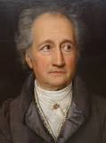

Johann Wolfgang Von Goethe
28 Ağustos 1749’da avukat Johann Caspar Goethe ile varlıklı ve tanınmış bir aileden gelen
Catharina Elizabeth Textor’un ilk çocuğu olarak Frankfurt am Main’da doğdu.
Dört kardeşinden sadece kendisinden birkaç yaş küçük olan Cornelia hayatta kalacaktı.
Babasından ve özel öğretmeninden aldığı eğitimle Goethe Fransızca, İngilizce,
İtalyanca, Latince, Yunanca gibi yabancı dillerin yanı sıra bilim, din, edebiyat,
resim, çello ve piyano, binicilik, eskrim ve dans da öğrendi. 1765’te babasının
isteği üzerine Leipzig’de hukuk okumaya başladı. Ancak hukuk derslerine devam etmek
yerine şiirle ilgilendi ve bu alanda dersler aldı. 1768 yılı Haziran ayında ağır
şekilde hastalanınca Leipzig’den ayrılmak zorunda kaldı. Uzun nekahet döneminde,
daha sonra Faust’ta da başvuracağı mistik konularla ilgilenmeye başladı ve ilk tiyatro
eseri olan Die Mitschuldigen (Suç Ortakları) komedisini yazdı. 1870’te sağlığına
kavuşunca hukuk eğitimine geri döndü ve yüksek takdir derecesiyle doktora unvanını aldı.
Bu dönemde “Urfaust” adını verdiği ve daha sonra “Faust” adını alacak eserine başladı.
Yirmi iki yaşında Frankfurt’a geri döndü ve burada kendi yazıhanesini açarak dört
yıl boyunca avukatlık yaptı, bir yandan da Ortaçağ sanatının etkisini taşıyan
Götz von Berlichingen adlı oyunu yazdı ve bu oyun “Sturm und Drang” (Fırtına ve Coşku)
döneminin temelini oluşturan eserlerden oldu. Arkadaşının nişanlısı Charlotte Buff’a
duyduğu aşkın ve yaşadıklarının etkisiyle Genç Werther’in Acıları adlı romanını yazdı
ve bu kitap sayesinde bir anda şöhrete kavuştu. 1775’te politika ile ilgilenmeye başladı
ve Weimar Dükü’nün özel danışmanlığı, ardından bayındırlık ve maliye bakanlığı gibi
görevlerde bulundu. Bu dönemde “Iphigenie Tauris’te” trajedisinin ilk düzyazı özeti
ile birlikte “Egmont” ve “Tasso” oyunlarını yazdı. 1786-1788 yılları arasında yaptığı
İtalya gezisini “yeniden doğuş” olarak niteleyen Goethe, dönüşünde sanat anlayışında
klasisizme geçti ve bu geçiş Alman edebiyatında da klasisizme geçiş olarak kabul edildi.
1789’da daha sonra evleneceği Christiane Vulpius ile tanıştı, aynı yıl oğlu Karl August
dünyaya geldi. 1791’de Jena Üniversitesi’nde ve Weimar Saray Tiyatrosu’nda görev aldı
ve Friedrich Schiller ile tanıştı. İkili birlikte antik döneme yönelerek Weimar Klasik
dönem edebiyatını geliştirdiler. Wilhelm Meister’in Çıraklık Yılları ve Unterhaltung
deutscher Ausgewanderten (Alman Göçmenlerin Sohbetleri), Schiller’in eleştirileri ile
şekil almıştır. Goethe, Fransız Devrimi’nin etkisiyle Der Groß-Cophta (Büyük Cophta),
Der Bürgergeneral’i (Yurttaş General) yazdı. Son romanı Gönül Yakınlıkları’nı 1807’de
tamamladı ve 1809 yılında otobiyografisi Yaşamımdan Şiir ve Hakikat’i yazmaya başladı.
Bu yıllarda Yakın Doğu ile ilgilenmeye başladı, Arapça ve Farsça öğrendi ve
Kuran-ı Kerim’i hatmetti. En önemli eserlerinden Faust’un ilk bölümünü 1808’de,
ikinci bölümünü 1832’de ölümünden kısa bir süre önce bitirebildi. 22 Mart 1832’de
kalp krizi sonucu hayatını kaybetti. Geride renk teorisi, yer bilimi, madencilik,
botanik ve osteoloji konularında kitaplar bıraktı. Cenazesi Frankfurt’ta Friedrich
Schiller’in yanına defnedildi.